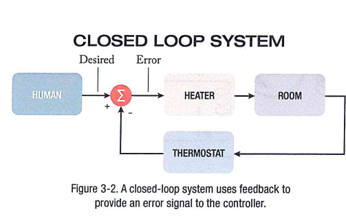
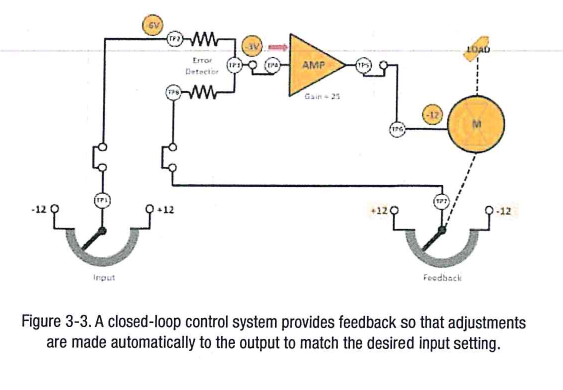
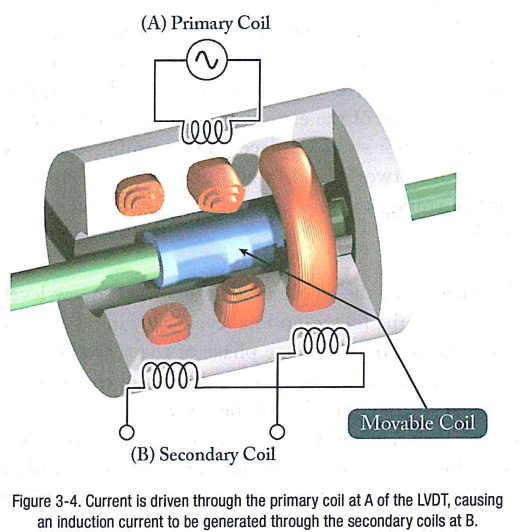
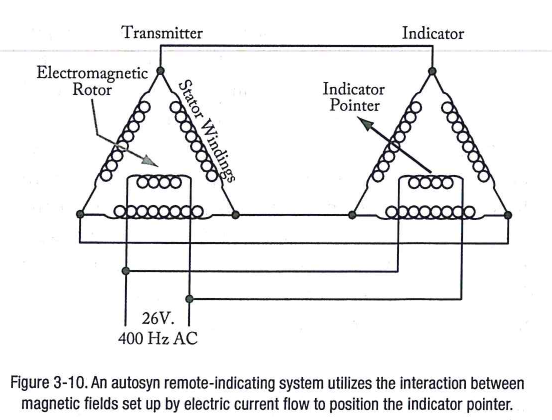
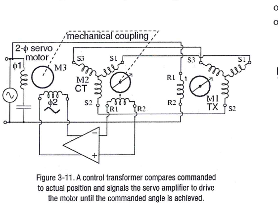
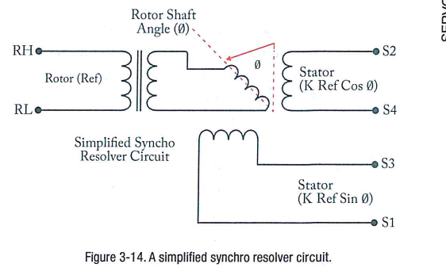
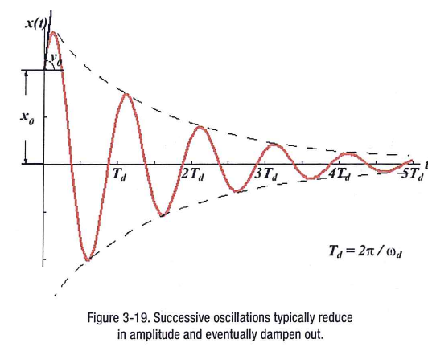
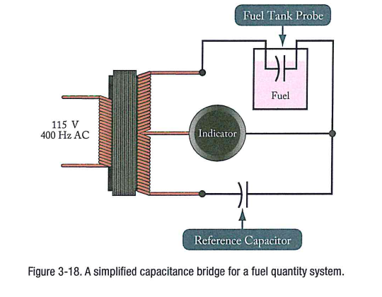

Vòng hở/kín, follow-up, LVDT/RVDT, synchro (selsyn, autosyn, magnasyn), CX–CT, vi sai, resolver, servo vị trí/vận tốc, hunting và tắt dần (EASA M04 mô-đun con 03 + giáo trình servo).
Servo: hệ điều khiển điện dùng tín hiệu vào năng lượng thấp để tạo chuyển động/lực, thường qua động cơ điện hoặc thủy lực
Cốt lõi của hệ điều khiển bay tự động (AFCS/autopilot), cũng dùng trong đồng hồ bay, autothrottle, ăng-ten radar
📖 Giải thích cho người mới bắt đầu
Phi công đặt lệnh nhỏ, servo khuếch đại thành lực đủ lớn để chuyển bề mặt điều khiển.
Phần 1 · Nền tảng
Vòng hở và vòng kín

EASA Hình 3-2
Hệ
Hồi tiếp
Ví dụ
Vòng hở
không
vôn kế thông thường
Vòng kín
có: ngõ ra so với ngõ vào
bộ điều nhiệt, autopilot
📖 Giải thích cho người mới bắt đầu
Vòng kín đưa sai số về không (null); vì thế autopilot luôn dùng vòng kín.
Phần 1 · Nền tảng
Các khối của vòng servo

EASA Hình 3-3
Follow-up (bộ phát hiện sai số): so sánh lệnh và vị trí thực
Mạch cộng (mạng điện trở) → bộ khuếch đại → động cơ servo → bánh răng → tải
📖 Giải thích cho người mới bắt đầu
Khi điện áp ở điểm cộng bằng không thì động cơ dừng.
Phần 1 · Nền tảng
Cảm biến vị trí LVDT và RVDT

EASA Hình 3-4
LVDT: biến áp một sơ cấp, hai thứ cấp, lõi di động; hiệu hai điện áp thứ cấp là tín hiệu hồi tiếp
Lõi ở giữa → hai điện áp triệt nhau → ngõ ra bằng không (null); RVDT đo góc
📖 Giải thích cho người mới bắt đầu
Chỉ có liên kết cảm ứng nên rất bền và ổn định.
PHẦN 2/5
02
Synchro và bộ biến đổi
Synchro mô-men
CX–CT
TDX và resolver
Phần 2 · Phương pháp
Synchro hoạt động thế nào
Synchro = biến áp biến đổi: một sơ cấp (rôto) quay 360° và ba thứ cấp (stato) cách nhau 120°
Điện áp rôto 115 V, tỉ số giảm 2,2:1 → tối đa ≈ 52 V ở một cuộn stato
Hai hệ: synchro mô-men (tải nhẹ, chỉ báo) và synchro điều khiển (tải nặng)
📖 Giải thích cho người mới bắt đầu
Từ trường quay theo rôto; thanh sắt hay nam châm đặt trong đó luôn xoay thẳng theo từ trường.
Phần 2 · Phương pháp
Selsyn DC, autosyn và magnasyn

EASA Hình 3-10
Loại
Nguồn
Rôto
DC selsyn
DC
cần tiếp xúc trên cuộn điện trở
Magnasyn
AC
nam châm vĩnh cửu
Autosyn
AC
nam châm điện
📖 Giải thích cho người mới bắt đầu
Bộ thu có bộ tắt dần để chống hunting; nếu cùng góc thì không có dòng.
Phần 2 · Phương pháp
Synchro điều khiển CX–CT

EASA Hình 3-11
CX (bộ phát điều khiển) → CT (biến áp điều khiển): rôto CT cho điện áp sai số tỉ lệ với độ lệch góc
Pha cùng nguồn khi lệch một chiều, ngược pha 180° khi lệch chiều kia; null tại tương ứng
📖 Giải thích cho người mới bắt đầu
Tín hiệu sai số khuếch đại để động cơ servo quay tải về null.
Phần 2 · Phương pháp
Synchro vi sai và resolver

EASA Hình 3-14
TDX: nhận hai ngõ vào vị trí, cho tổng hoặc hiệu (đảo dây S1–S3 để đổi cộng thành trừ)
Resolver: hai cuộn stato lệch 90° cho sin θ và cos θ; đưa vào ADC cho máy tính bay
📖 Giải thích cho người mới bắt đầu
Resolver là loại bền nhất trong các thiết bị đo góc.
PHẦN 3/5
03
Ví dụ từ sách
Servo vận tốc
Servo vị trí
Câu hỏi EASA
Phần 3 · Ví dụ từ sách
Ví dụ servo vận tốc
Ví dụ · Servo vận tốc (SV tr.71)
Điều khiển −9 V, R2 = R3, động cơ 10 vòng/phút/V, máy phát tốc 1 V/10 vòng/phút: ban đầu sai số −4,5 V; ở 10 vòng/phút −4 V; cân bằng ở 30 vòng/phút với sai số −3 V
Tổng quát
N = K·|Vin| / (2 + K·t)
📖 Giải thích cho người mới bắt đầu
Tốc độ ổn định khi sai số vừa đủ để động cơ quay đúng tốc độ tương ứng với máy phát tốc.
Phần 3 · Ví dụ từ sách
Ví dụ servo vị trí và điện áp stato
Ví dụ · Servo vị trí một chiều (SV tr.66–68)
R2 = R3, ngõ vào +10 V, hồi tiếp 0 V → điểm cộng +5 V; động cơ chạy cho đến khi hồi tiếp = −10 V (điểm cộng 0 V)
Ví dụ · Cảm ứng synchro (SV tr.14)
115 V / 2.2 ≈ 52 V
📖 Giải thích cho người mới bắt đầu
Với điện trở bằng nhau, điểm cộng là trung bình của hai điện áp.
Phần 3 · Ví dụ từ sách
Câu hỏi EASA tiêu biểu
Ví dụ · EASA 3-2, 3-3
Vòng kín có hồi tiếp: so ngõ ra với ngõ vào cho tới null; follow-up tính hiệu giữa vị trí mong muốn và thực tế
Ví dụ · EASA 3-5, 3-7
Selsyn: DC; magnasyn: AC, nam châm vĩnh cửu; autosyn: AC, nam châm điện. Bộ tắt dần chống hunting
Ví dụ · EASA 3-13
Vùng chết hẹp → chính xác cao, nhưng quá hẹp gây hunting
📖 Giải thích cho người mới bắt đầu
Toàn bộ 15 câu hỏi và đáp án in sẵn có trong ngân hàng bài tập.
PHẦN 4/5
04
Sai lầm thường gặp
Hunting, tắt dần
Vùng chết
Lỗi synchro
Phần 4 · Sai lầm và mở rộng
Hunting và tắt dần

EASA Hình 3-19
Hunting: quán tính đưa động cơ vượt qua null, sai số đổi pha và quá trình lặp lại
Tắt dần: hồi tiếp điện áp máy phát (tỉ lệ vận tốc) hoặc bộ tắt dần nhớt (cốc kéo + bánh đà nam châm)
📖 Giải thích cho người mới bắt đầu
Quá tắt dần thì chậm, thiếu tắt dần thì dao động; cần mức trung gian.
Phần 4 · Sai lầm và mở rộng
Độ lợi, vùng chết và ổn định
Tăng độ lợi giảm độ trễ nhưng tăng vượt quá → cần tắt dần
Vùng chết: khoảng quanh null không có ngõ ra; hẹp → chính xác cao nhưng dễ hunting
Đảo nhầm dây hồi tiếp có thể làm hệ mất ổn định
📖 Giải thích cho người mới bắt đầu
Servo là hệ phi tuyến nên hành vi có thể khó dự đoán.
Phần 4 · Sai lầm và mở rộng
Cảm biến điện dung và lỗi synchro

EASA Hình 3-18
Bộ phát điện dung: hai bản đồng tâm cố định; hằng số điện môi đổi theo tỉ lệ nhiên liệu/không khí
Lỗi synchro: sai lệch khe hở (stato elip), mất cân bằng cuộn stato
📖 Giải thích cho người mới bắt đầu
Lỗi khe hở làm méo từ thông và giảm độ chính xác.
PHẦN 5/5
05
Ứng dụng và tổng kết
Servo trong tàu bay (minh hoạ)
Bảng tóm tắt
Ba ý chính
Phần 5 · Ứng dụng và tổng kết
Servo trong tàu bay
Autopilot: bộ điều khiển → servo → bề mặt điều khiển; hồi tiếp từ cảm biến vị trí (LVDT/synchro/resolver)
Chỉ báo từ xa: vị trí cánh tà, càng đáp, hướng bằng synchro
Thực hành: dùng 555 tạo xung PWM điều khiển động cơ servo (module 07)
📖 Giải thích cho người mới bắt đầu
Các ví dụ minh hoạ nguyên lý theo EASA, không mô tả một hệ thống cụ thể.
Phần 5 · Ứng dụng và tổng kết
Bảng tóm tắt module
Chủ đề
Điểm cần nhớ
Vòng kín
hồi tiếp, follow-up, null
LVDT/RVDT
1 sơ cấp, 2 thứ cấp, lõi di động
Synchro
rôto 1 cuộn, stato 3 cuộn 120°
CX–CT
điện áp sai số ∝ độ lệch góc
Resolver
2 stato 90° → sin, cos
Ổn định
hunting, deadband, tắt dần
📖 Giải thích cho người mới bắt đầu
Sáu dòng này bao quát các câu hỏi EASA 3-1…3-15.
Phần 5 · Ứng dụng và tổng kết
Ba ý chính
Servo = hồi tiếp âm: so lệnh với kết quả cho đến khi sai số về không
Synchro truyền góc; CT biến độ lệch góc thành điện áp sai số
Ổn định đòi hỏi tắt dần hợp lý
📖 Giải thích cho người mới bắt đầu
Hết bộ module; ôn lại bằng ngân hàng câu hỏi và các đề luyện.
Nội dung chi tiết
1. Nội dung chi tiết đối chiếu sách
EASA M04 SM03: tr.3.2–3.4 servo, vòng hở/kín, follow-up, LVDT/RVDT; 3.4–3.7 synchro DC selsyn, AC autosyn/magnasyn; 3.7–3.10 synchro mô-men, điều khiển, vi sai, resolver, bộ phát cảm ứng/điện dung; 3.10–3.13 ổn định, hunting, deadband, tắt dần, lỗi; 3.15–3.18 câu hỏi và đáp án.
«SERVOMECHANISM (sv).pdf»: tr.1–2 synchro; 14 điện áp stato; 34–36 CX–CT; 66–72 servo vị trí/vận tốc/gia tốc; 73–77 độ trễ, tắt dần.
Floyd §16–6 (555 PWM) cho phần thực hành động cơ servo: xem module 07.
2. Năm ví dụ có lời giải số
Ví dụ · 1
Velocity servo: N = 10·9/(2 + 10·0.1) = 30 rpm; error −3 V
Ví dụ · 2
Position servo: (+10 + 0)/2 = +5 V; at null feedback = −10 V
Ví dụ · 3
Stator coil: 115/2.2 = 52.3 V
Ví dụ · 4
CT error: Verr = 55 V·sin(Δθ) (SV p.35: 55 V at 90°) → 1° gives 0.96 V
Synchro ra đời để truyền góc từ xa bằng điện trước khi có mã hóa số; servo hồi tiếp là nền tảng của điều khiển tự động. Lý thuyết ổn định giải thích vì sao thêm độ lợi gây dao động và vì sao phải tắt dần.
4. Ca ứng dụng trên tàu bay (minh hoạ)
Minh hoạ theo EASA: lệnh autopilot → bộ điều khiển → servo → bề mặt điều khiển, với cảm biến vị trí phản hồi; chỉ báo vị trí cánh tà bằng synchro. Không mô tả hệ thống cụ thể.